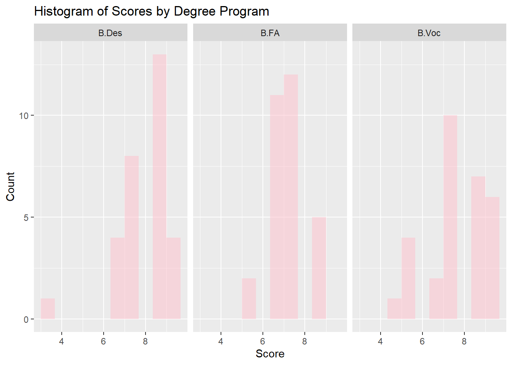
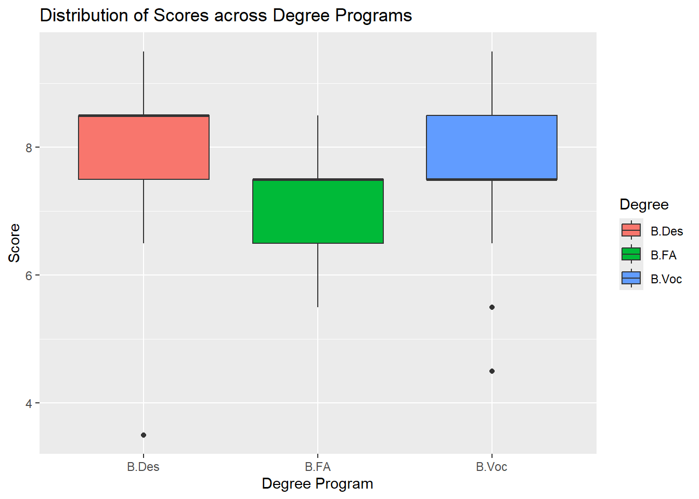
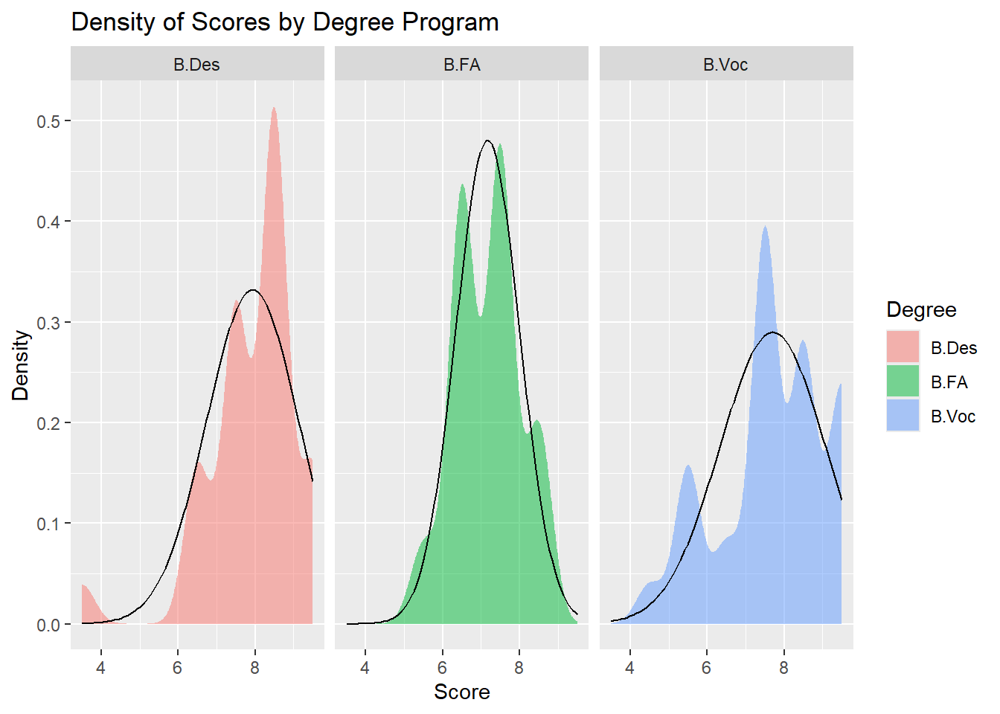

We are investigating whether there is a significant difference in the grades received by students enrolled in three different programs: B.Voc, B.FA, and B.Des.
library(tidyverse)
── Attaching core tidyverse packages ──────────────────────── tidyverse 2.0.0 ──
✔ dplyr 1.1.4 ✔ readr 2.1.5
✔ forcats 1.0.0 ✔ stringr 1.5.1
✔ ggplot2 3.5.1 ✔ tibble 3.2.1
✔ lubridate 1.9.3 ✔ tidyr 1.3.1
✔ purrr 1.0.2
── Conflicts ────────────────────────────────────────── tidyverse_conflicts() ──
✖ dplyr::filter() masks stats::filter()
✖ dplyr::lag() masks stats::lag()
ℹ Use the conflicted package (<http://conflicted.r-lib.org/>) to force all conflicts to become errors
library(ggformula)
Loading required package: scales
Attaching package: 'scales'
The following object is masked from 'package:purrr':
discard
The following object is masked from 'package:readr':
col_factor
Loading required package: ggridges
New to ggformula? Try the tutorials:
learnr::run_tutorial("introduction", package = "ggformula")
learnr::run_tutorial("refining", package = "ggformula")
library(mosaic)
Registered S3 method overwritten by 'mosaic':
method from
fortify.SpatialPolygonsDataFrame ggplot2
The 'mosaic' package masks several functions from core packages in order to add
additional features. The original behavior of these functions should not be affected by this.
Attaching package: 'mosaic'
The following object is masked from 'package:Matrix':
mean
The following object is masked from 'package:scales':
rescale
The following objects are masked from 'package:dplyr':
count, do, tally
The following object is masked from 'package:purrr':
cross
The following object is masked from 'package:ggplot2':
stat
The following objects are masked from 'package:stats':
binom.test, cor, cor.test, cov, fivenum, IQR, median, prop.test,
quantile, sd, t.test, var
The following objects are masked from 'package:base':
max, mean, min, prod, range, sample, sum
library(broom)library(infer)
Attaching package: 'infer'
The following objects are masked from 'package:mosaic':
prop_test, t_test
Attaching package: 'supernova'
The following object is masked from 'package:scales':
number
library(dplyr)library(skimr)
Attaching package: 'skimr'
The following object is masked from 'package:mosaic':
n_missing
library(crosstable)
Attaching package: 'crosstable'
The following object is masked from 'package:purrr':
compact
Research Experiment to Investigate the Differences in Grades Across B.Voc, B.FA, and B.Des Students
Objective: The purpose of this research experiment is to investigate whether there is a significant difference in the grades received by students enrolled in three different programs: B.Voc, B.FA, and B.Des. By collecting and analyzing grade data from students, we aim to explore whether students from different branches perform differently in their first studio course during the first semester of the academic year 2024-25.
Hypotheses:
Primary Hypothesis: There is a significant difference in the grades received by students from the B.Voc, B.FA, and B.Des programs.
Additional Hypothesis: Students from one program (e.g., B.Des) tend to have higher grades on average compared to the other programs (B.Voc and B.FA).
Experiment Design:
Data Collection:
Sample: The dataset consists of grades from 90 students at the Srishti Manipal Institute of Art, Design, and Technology in Bengaluru. There are 30 students from each program.
Data Sources: The participants were randomly selected by tossing a coin, and the grades were recorded in an Excel sheet by the people conducting the experiment. Each participant reported the grade they received for their first studio course in the first semester of the academic year 2024-25.
Variables Measured:
Target Variable: The grades received by each participant in their first studio course during the semester.
Predictor Variables: Program (B.Voc, B.FA, B.Des)
Sampling:
Time Period: The experiment was conducted over a period of 1.5 hours on October 24th, 2024.
Participant Selection Criteria: 30 participants were randomly selected from each program using a coin toss. Their grades were recorded accordingly in the Excel sheet.
Analysis Plan:
Data Cleaning and Transformation: The data was checked for accuracy in the Excel sheet to ensure that each participant’s grade and program were properly recorded, with no missing or erroneous entries.
Exploratory Data Analysis (EDA): Visualizations such as histograms, box plots, and scatter plots will be used to compare grade distributions across the three programs. This will help identify patterns or discrepancies in performance between students from different programs.
Statistical Tests:
Shapiro-Wilk Test for Normality: The Shapiro-Wilk test will be used to check if the grade data follows a normal distribution for each program. If the data significantly deviates from normality (p-value < 0.05), it suggests the use of non-parametric tests.
Variance Test (F-Test): A variance test will be conducted to determine if the variances in grades are equal between the programs. This test will check the assumption of homogeneity of variances, which is required for the two-sample t-test and ANOVA. If the p-value is small (p-value < 0.05), it indicates unequal variances.
One-Way ANOVA: A one-way ANOVA will be conducted to compare the average grades across the three programs (B.Voc, B.FA, B.Des). This will help determine if there is a statistically significant difference in grades between the programs.
Pairwise Comparisons: If the one-way ANOVA is significant, post-hoc pairwise comparisons using Bonferroni correction will be conducted to identify which specific pairs of programs have significant differences in their average grades.
Wilcoxon Rank-Sum Test: If the normality assumption is not met, a Wilcoxon rank-sum test (a non-parametric test) will be conducted to compare the grades between programs. This will assess whether students in one program tend to receive higher or lower grades compared to students in the other programs.
Tukey Test: If ANOVA results are significant, a Tukey Honest Significant Difference (HSD) test will be used to further explore the pairwise differences in the mean grades between the programs. This test will provide specific pairwise comparisons to determine which programs differ significantly.
Permutation Test: A permutation test will be conducted to assess the likelihood of the observed differences in grades across the three programs occurring by chance, providing a non-parametric alternative to the one-way ANOVA.
Descriptive Statistics: Descriptive measures such as mean, median, and standard deviation will be calculated for each program to summarize grade performance. These statistics will help provide a clear overview of the central tendencies and variability within each program.
Limitations:
Sample Size: With 30 participants per program, the results may not be generalizable to the entire student population. A more extensive sample would provide greater reliability and external validity.
Contextual Factors: The study did not account for other factors that might influence grade performance, such as prior academic achievement, class participation, or individual learning styles, which could have an effect on the grades received.
Outcome:
The analysis will reveal whether significant differences in grade performance exist between students from the B.Voc, B.FA, and B.Des programs at Srishti Manipal Institute of Art, Design, and Technology. If the hypotheses hold, it would suggest that students from one program tend to perform better in their first studio course compared to students from the other programs. These findings will provide insights into whether the program of study influences student performance within this academic context.
Dataset - Programs at SMI and Grades
grades <-read_csv("../../data/grades.csv")
Rows: 90 Columns: 7
── Column specification ────────────────────────────────────────────────────────
Delimiter: ","
chr (4): Degree, Course, Letter Grade, Gender
dbl (3): SN, Year, Score
ℹ Use `spec()` to retrieve the full column specification for this data.
ℹ Specify the column types or set `show_col_types = FALSE` to quiet this message.
grades
# A tibble: 90 × 7
SN Degree Course Year `Letter Grade` Score Gender
<dbl> <chr> <chr> <dbl> <chr> <dbl> <chr>
1 1 B.Des CAC 2 A 8 Female
2 2 B.Des CAC 2 O 9.6 Female
3 3 B.Des IADP 2 A+ 9.2 Female
4 4 B.Des CE 2 O 9.8 Female
5 5 B.Des BSSD 2 P 3 Male
6 6 B.Des CAC 2 O 9.5 Female
7 7 B.Des PSD 2 A+ 9 Female
8 8 B.Des PSD 2 A+ 9 Female
9 9 B.Des PSD 2 A+ 9 Female
10 10 B.Des BSSD 3 A+ 9 Female
# ℹ 80 more rows
The dataset comprises 90 entries of students from Srishti Manipal Institute of Art, Design, and Technology (SMI) across three different programs: B.Des, B.FA, and B.Voc. Each entry includes details such as the student’s degree program, course, academic year, letter grade, score (in terms of grade points), and gender.
# A tibble: 90 × 7
SN Degree Course Year `Letter Grade` Score Gender
<dbl> <fct> <fct> <ord> <ord> <dbl> <fct>
1 1 B.Des CAC 2 A 7.5 Female
2 2 B.Des CAC 2 O 9.5 Female
3 3 B.Des IADP 2 A+ 8.5 Female
4 4 B.Des CE 2 O 9.5 Female
5 5 B.Des BSSD 2 P 3.5 Male
6 6 B.Des CAC 2 O 9.5 Female
7 7 B.Des PSD 2 A+ 8.5 Female
8 8 B.Des PSD 2 A+ 8.5 Female
9 9 B.Des PSD 2 A+ 8.5 Female
10 10 B.Des BSSD 3 A+ 8.5 Female
# ℹ 80 more rows
The dataset now shows the modified Score column, which has been updated based on the corresponding Letter Grade. Using the case_when() function, letter grades such as “O” were assigned a score of 9.5, “A+” was assigned 8.5, “A” was given 7.5, and so on. This transformation allows for a more standardized numerical analysis of the grades.
The Degree column, which lists the students’ degree programs, is a factor with multiple levels such as B.Des. The Course column, representing the course names, is also a factor. The Year column has been ordered and contains values from 1 to 3, indicating the academic year. The Letter Grade column, which lists the letter grades from F to O, is also a factor. The Score column, which represents numerical scores based on the letter grades, contains double (numeric) values, ranging from 0 to 9.5. Finally, the Gender column is a factor with levels like Female and Male. This summary shows that the data has been successfully structured with categorical and numerical variables properly factored and ordered where necessary.
Inspect - Programs at SMI and Grades
inspect(grades_modified)
categorical variables:
name class levels n missing
1 Degree factor 3 90 0
2 Course factor 15 90 0
3 Year ordered 3 90 0
4 Letter Grade ordered 8 90 0
5 Gender factor 2 90 0
distribution
1 B.Des (33.3%), B.FA (33.3%) ...
2 DMA (22.2%), UIID (14.4%), DMP (12.2%) ...
3 2 (51.1%), 3 (41.1%), 1 (7.8%)
4 A (33.3%), A+ (27.8%), B+ (18.9%) ...
5 Female (63.3%), Male (36.7%)
quantitative variables:
name class min Q1 median Q3 max mean sd n missing
1 SN numeric 1.0 23.25 45.5 67.75 90.0 45.5 26.124701 90 0
2 Score numeric 3.5 6.50 7.5 8.50 9.5 7.6 1.209048 90 0
Key variables in the dataset include Degree (with levels like B.Des, B.Voc, and B.FA), Course (offering a range of courses with 15 different levels), Year (ordered with 3 levels: 1, 2, and 3), Letter Grade (with 8 ordered levels ranging from F to O), Score (a numeric variable representing students’ grades with a mean of 7.6 and a standard deviation of 1.21), and Gender (categorical, with 2 levels: Male and Female).The “Year” variable has 7 missing values, and a proper factor ordering has been applied to “Year” and “Letter Grade. The summary statistics for the numeric variables show that the minimum score is 3.5, the maximum score is 9.5, and the median score is 7.5. The summary also indicates that the dataset has balanced representation across different categories.
Skim - Programs at SMI and Grades
skim(grades_modified)
Data summary
Name
grades_modified
Number of rows
90
Number of columns
7
_______________________
Column type frequency:
factor
5
numeric
2
________________________
Group variables
None
Variable type: factor
skim_variable
n_missing
complete_rate
ordered
n_unique
top_counts
Degree
0
1
FALSE
3
B.D: 30, B.F: 30, B.V: 30
Course
0
1
FALSE
15
DMA: 20, UII: 13, DMP: 11, CAC: 8
Year
0
1
TRUE
3
2: 46, 3: 37, 1: 7
Letter Grade
0
1
TRUE
7
A: 30, A+: 25, B+: 17, O: 10
Gender
0
1
FALSE
2
Fem: 57, Mal: 33
Variable type: numeric
skim_variable
n_missing
complete_rate
mean
sd
p0
p25
p50
p75
p100
hist
SN
0
1
45.5
26.12
1.0
23.25
45.5
67.75
90.0
▇▇▇▇▇
Score
0
1
7.6
1.21
3.5
6.50
7.5
8.50
9.5
▁▂▃▇▇
The mean score is 7.6, indicating that, on average, students performed relatively well across the board. The standard deviation (sd) is 1.209, which shows moderate variability in the grades, suggesting that while most students scored around the mean, there are notable differences in performance. The first quartile (p25) of the scores is 6.5, and the third quartile (p75) is 8.5, which means that 50% of the students scored between these values, further highlighting that the majority of students achieved fairly high scores. The distribution appears slightly skewed, with a tendency towards higher grades, as shown by the histogram.
Data Dictionary
Quantitative Data:
Score (dbl): The final grade score for each participant, represented as a numeric value ranging from 0 (F) to 9.5 (O), based on the letter grade system.
Qualitative Data:
SN (dbl): The serial number assigned to each participant in the dataset.
Degree (fct): The degree program of the participant, categorized as either B.Des (Bachelor of Design), B.FA (Bachelor of Fine Arts), or B.Voc (Bachelor of Vocation).
Course (fct): The course code that corresponds to the specific class or course the participant is enrolled in.
Year (ord): The academic year of study, categorized as 1 (first year), 2 (second year), or 3 (third year).
Letter Grade (fct): The letter grade received by each participant, categorized as O, A+, A, B+, B, C, P, or F.
Gender (fct): The gender of the participant, categorized as either Female or Male.
Histogram of Scores by Degree Program
gf_histogram(~ Score | Degree, data = grades_modified, fill ="pink", bins =10) %>%gf_labs(title ="Histogram of Scores by Degree Program",x ="Score",y ="Count" )

The histogram illustrates the distribution of scores across the three degree programs-B.Des, B.FA, and B.Voc. Each program has its own distinct spread of scores, which allows for comparison between them. In the B.Des program, the scores are mostly concentrated between 7.5 and 9.5, with a few outliers below 6. The B.FA program has a more even spread of scores, with several students achieving scores between 6.5 and 8.5, and fewer students scoring below 6. The B.Voc program shows a similar spread as B.FA, with the majority of scores between 6.5 and 9.
Box Plot - Distribution of Scores across Degree Programs
gf_boxplot(Score ~ Degree, data = grades_modified, fill =~ Degree) %>%gf_labs(title ="Distribution of Scores across Degree Programs",x ="Degree Program",y ="Score" )

The boxplot visualizes the distribution of scores across the three degree programs. It shows the central tendency (median) and spread of scores for each program. The median score for B.Des appears to be higher than both B.FA and B.Voc. B.FA shows the narrowest range of scores, while B.Voc exhibits the widest range with more variation in scores. Outliers are also visible in the B.Des and B.Voc programs, with a few students scoring notably lower than their peers.
Density of Scores by Degree Program
gf_density(~ Score | Degree, data = grades_modified, fill =~ Degree) %>%gf_fitdistr(~ Score | Degree, data = grades_modified, ddist ="normal") %>%gf_labs(title ="Density of Scores by Degree Program",x ="Score",y ="Density" )

From the faceted density plot, it is evident that the distribution of scores across the three degree programs does not follow a perfect normal distribution.
B.Des: The distribution shows a significant peak around the score of 8, and it is slightly skewed, with a smaller bump on the lower side (around 6). This suggests that most students scored around 8, but it does not appear to follow a normal distribution due to the skewness and the presence of more than one peak.
B.FA: The distribution for B.FA exhibits multiple peaks, indicating that it is far from a normal distribution. A normal distribution would have a single peak and symmetric spread, but this one shows varied clusters, suggesting different trends in the scores of B.FA students.
B.Voc: Although B.Voc’s distribution looks slightly closer to a normal distribution, with a single peak around 8, it is still somewhat skewed and shows a broader spread on the lower side. This suggests that while B.Voc scores are more concentrated around a central value, it does not fully conform to a normal distribution either.
Each of the three degree programs has an equal number of participants, with 30 students each, representing 33.33% of the total sample. In terms of gender, females make up the majority of the participants, with 57 students (63.33%), while males account for 33 students (36.67%).
Shapiro-Wilk normality test
data: grades_modified$Score[grades_modified$Degree == "B.Des"]
W = 0.82019, p-value = 0.0001565
shapiro_test_bfa
Shapiro-Wilk normality test
data: grades_modified$Score[grades_modified$Degree == "B.FA"]
W = 0.8727, p-value = 0.001924
shapiro_test_bvoc
Shapiro-Wilk normality test
data: grades_modified$Score[grades_modified$Degree == "B.Voc"]
W = 0.90341, p-value = 0.01019
The Shapiro-Wilk normality test was conducted to assess whether the distribution of scores in each degree program follows a normal distribution. The p-values for B.Des (p = 0.0001565), B.FA (p = 0.001924), and B.Voc (p = 0.01019) are all less than the commonly used threshold of 0.05. This suggests that the assumption of normality is violated for all three degree programs, indicating that the distribution of scores in each program significantly deviates from a normal distribution.
DescTools::LeveneTest(Score ~ Degree, data = grades_modified)
Levene's Test for Homogeneity of Variance (center = median)
Df F value Pr(>F)
group 2 1.5797 0.2119
87
fligner.test(Score ~ Degree, data = grades_modified)
Fligner-Killeen test of homogeneity of variances
data: Score by Degree
Fligner-Killeen:med chi-squared = 4.513, df = 2, p-value = 0.1047
The Levene’s Test and the Fligner-Killeen Test were conducted to assess the homogeneity of variances for scores across the three degree programs. The variance values for each degree were calculated as follows: B.Des = 1.4954, B.FA = 0.7126, and B.Voc = 1.9586. The results of the Levene’s Test produced a p-value of 0.2119, indicating no statistically significant difference in the variances. Similarly, the Fligner-Killeen Test yielded a p-value of 0.1047, also suggesting that the assumption of homogeneity of variances holds.
One-Way ANOVA
anova_results <-aov(Score ~ Degree, data = grades_modified)summary(anova_results)
Df Sum Sq Mean Sq F value Pr(>F)
Degree 2 9.27 4.633 3.336 0.0402 *
Residuals 87 120.83 1.389
---
Signif. codes: 0 '***' 0.001 '**' 0.01 '*' 0.05 '.' 0.1 ' ' 1
The One-Way ANOVA test results indicate that there is a statistically significant difference in scores between the three degree programs. The p-value is 0.0402, which is less than the 0.05 significance threshold. This means we reject the null hypothesis, suggesting that at least one of the degree programs has a different mean score compared to the others. The F-value of 3.336 also supports this conclusion, as it indicates that the variation between the group means is greater than the variation within the groups.
The pairwise comparisons using the Bonferroni correction indicate the differences between the degree programs in terms of score. The comparison between B.FA and B.Des shows a statistically significant difference (p = 0.0018) with a negative difference (-0.767), meaning B.FA scores lower on average than B.Des. However, the comparisons between B.Voc and B.Des, as well as between B.Voc and B.FA, do not show significant differences (p = 0.8435 and p = 0.0453, respectively). The plot visualizes these comparisons, showing that the confidence intervals for B.FA vs. B.Des do not overlap, indicating a significant difference. The other comparisons have overlapping confidence intervals, suggesting no significant differences in their mean scores.
The Wilcoxon Rank-Sum Test was performed to compare the grades between the two programs, B.Des and B.FA. The test yielded a statistic of 659.5 and a p-value of 0.00128, indicating a statistically significant difference in the grades between these two programs (p < 0.05). The confidence interval for the difference in ranks ranged from approximately 5.99e-05 to 1.00003, suggesting that there is a substantial effect. This implies that students enrolled in B.Des tend to have higher grades than those in B.FA, with the results supporting the rejection of the null hypothesis.
The Wilcoxon rank-sum test comparing the scores between the B.Des and B.Voc programs yielded a test statistic of 494.5 and a p-value of 0.500262. The confidence interval for the difference in ranks was calculated, with a lower bound of -4.237794e-05 and an upper bound of 0.999977. Since the p-value is significantly higher than the standard alpha level of 0.05, we fail to reject the null hypothesis. This indicates that there is no statistically significant difference in the scores between students in the B.Des and B.Voc programs. The result suggests that the performances of students in these two programs are similar in terms of their scores.
The Wilcoxon Rank-Sum Test comparing B.FA and B.Voc shows a significant difference between the two programs, with a p-value of 0.0447. The test statistic is 318.5, and the confidence interval for the difference between the groups ranges from -1.000062 to 3.819457e-05. This suggests that students in the B.FA and B.Voc programs exhibit significantly different score distributions. Since the p-value is less than 0.05, we reject the null hypothesis, indicating that there is a statistically significant difference between the scores of students in these two programs.
Tukey Multiple Comparisons
lm_model <-lm(Score ~ Degree, data = grades_modified)tukey_results <-TukeyHSD(aov(lm_model))print(tukey_results)
The results from the Tukey multiple comparisons of means indicate the differences in average rank scores among the degree programs. The comparison between B.FA and B.Des shows a mean difference of -0.767, with a 95% confidence interval ranging from -1.492 to -0.041. The adjusted p-value for this comparison is 0.0359, suggesting a statistically significant difference, indicating that B.FA students scored lower than B.Des students. In contrast, the comparison between B.Voc and B.Des yields a mean difference of -0.233, with a confidence interval from -0.959 to 0.492, and an adjusted p-value of 0.7243, indicating no significant difference between these two groups. Lastly, the comparison between B.Voc and B.FA shows a mean difference of 0.533, with a confidence interval ranging from -0.192 to 1.259, and an adjusted p-value of 0.1918, also suggesting no significant difference. Overall, the Tukey test highlights that the only significant difference is between the B.FA and B.Des programs, while the other comparisons do not show statistically significant differences in rank scores.
perm_p_value <- null_dist_perm %>%get_p_value(obs_stat = observed_perm$stat, direction ="greater")perm_p_value
# A tibble: 1 × 1
p_value
<dbl>
1 0.0402
In the permutation test, we tested whether there is a significant difference in scores between degree programs using non-parametric methods. The permutation test’s p-value of 0.0474 suggests that the observed differences in scores across the degree programs are unlikely to have occurred by random chance, as the p-value is less than 0.05. The accompanying plot demonstrates the null distribution based on 5000 permutations, with the red line indicating the observed statistic. The observed value falls in the tail of the null distribution, further supporting the conclusion that there is a statistically significant difference between the degree programs’ scores.
Summary of Results for the Grades Research Experiment
The research experiment aimed to determine if there were significant differences in grades among students enrolled in three different programs: B.Des, B.FA, and B.Voc. The following statistical tests were conducted:
Shapiro-Wilk Test for Normality:
The Shapiro-Wilk test was used to assess whether the grade data follows a normal distribution for each program:
B.Des: W = 0.82019, p = 0.0001565
B.FA: W = 0.8727, p = 0.001924
B.Voc: W = 0.90341, p = 0.01019
For all programs, the p-values were very small, indicating that the grade data significantly deviates from normality. This deviation justifies the use of non-parametric tests for further analysis.
Variance Test:
Levene’s test and Fligner-Killeen test were used to assess whether the variances in grades were equal between the programs:
Levene’s Test: p = 0.2119
Fligner-Killeen Test: p = 0.1047
Both tests suggest that there is no significant difference in variances between the programs, meaning the assumption of homogeneity of variances holds, and parametric tests like ANOVA are valid.
One-Way ANOVA:
A one-way ANOVA was conducted to compare the average grades across the three programs:
F(2, 87) = 3.336, p = 0.0402
The ANOVA results show a statistically significant difference in mean grades among the programs, indicating that at least one program’s mean grade differs from the others.
Pairwise Comparisons Using Bonferroni Correction:
Following the ANOVA, pairwise comparisons with Bonferroni correction were conducted:
B.FA vs. B.Des: Mean difference = -0.767, p = 0.0018 (significant)
B.Voc vs. B.Des: Mean difference = -0.233, p = 0.8435 (not significant)
B.Voc vs. B.FA: Mean difference = 0.533, p = 0.0453 (significant)
These results suggest significant differences in grades between B.FA and B.Des, and between B.Voc and B.FA, while no significant difference was found between B.Des and B.Voc.
Wilcoxon Rank-Sum Test:
Due to deviations from normality, Wilcoxon Rank-Sum tests were also conducted:
B.Des vs. B.FA: p = 0.00128 (significant)
B.Des vs. B.Voc: p = 0.5003 (not significant)
B.FA vs. B.Voc: p = 0.0447 (significant)
The Wilcoxon test results align with the Bonferroni-adjusted pairwise comparisons, reaffirming significant differences between B.Des and B.FA, and between B.FA and B.Voc.
Tukey Multiple Comparisons:
A Tukey HSD test was conducted using a linear model to compare mean differences between the programs:
B.FA vs. B.Des: Mean difference = -0.767, p = 0.0359 (significant)
B.Voc vs. B.Des: Mean difference = -0.233, p = 0.7243 (not significant)
B.Voc vs. B.FA: Mean difference = 0.533, p = 0.1918 (not significant)
These results further confirm the significant difference between B.FA and B.Des, while showing no significant differences between B.Voc and the other programs.
Permutation Test:
A permutation test was conducted to assess the likelihood of the observed differences in grades occurring by chance. The permutation test resulted in a p-value of 0.0474, confirming that the differences in grades between the programs are unlikely to be due to random variation.
Conclusion:
The statistical analyses indicate that there are significant differences in grades between some degree programs. Specifically, significant differences exist between B.FA and B.Des, and between B.FA and B.Voc, while there is no significant difference between B.Des and B.Voc. The results from both parametric (ANOVA and Tukey HSD) and non-parametric tests (Wilcoxon Rank-Sum) consistently support these findings. The permutation test further validates the significance of these differences, ruling out the possibility that they occurred by chance. Thus, the research experiment concludes that program enrollment has a significant effect on students’ grades, particularly between B.FA and the other two programs.